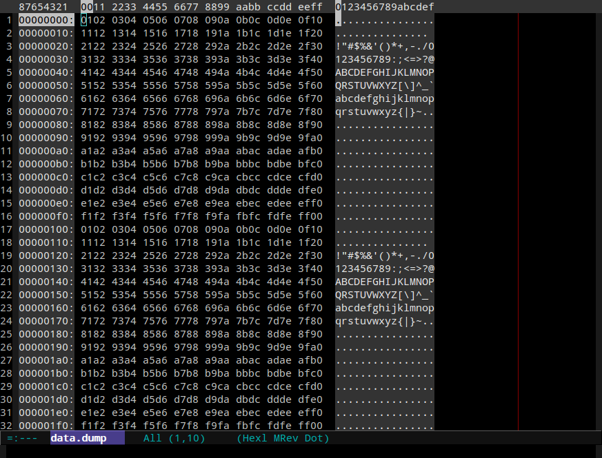
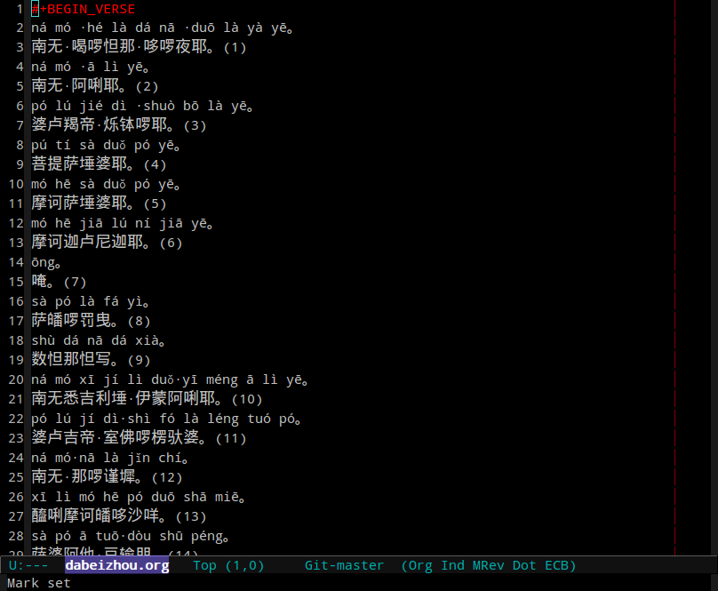
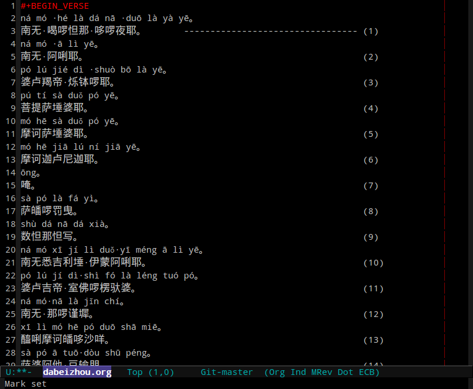
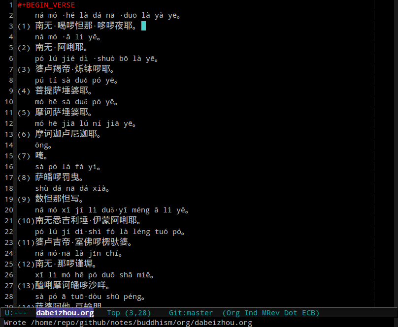

Emacs基本用法
Table of Contents
1 常用按键
1.1 标准跳转快捷键
| C-[fb] | 前后移动一个字符 |
| C-[np] | 前后移动一行 |
| M-[fb] | 前后移动一个词 |
| C-l/M-r | 滚屏幕/滚光标 |
| C-v/M-v | 前后滚一整屏 |
| C-[ae] | 移动到行首/行尾 |
| M-[ae] | 移动到句首/句尾 |
| M-[<>] | 移到缓冲区开头/结尾 |
| M-g M-g | 移动到指定行 |
| M-g c | 从缓冲区开始，移动指定字符数 |
| M-g TAB | 移动到制定列 |
| C-x C-n | 指定上下移动时光标停留的列 |
| C-u C-x C-n | 取消指定上下移动时光标停留的列 |
1.2 常用编辑快捷键
| C-x C-f | 查找文件 |
| C-x C-s | 保存 |
| C-x s | 保存多个缓冲区 |
| C-x k | 删除缓冲区 |
| C-x C-b | 查看缓冲区列表 |
| C-1 C-r | 重新读取缓存 |
| C-d/BS | 前后删除一个字符 |
| M-d/M-BS | 前后删除一个词 |
| M-k | 向前删除一个句子 |
| C-x BS | 向后删除一个句子 |
| C-k | 剪切到行尾 |
| C-1 C-k | 复制到行尾 |
| M-w | 复制 |
| C-w | 剪切 |
| C-y | 粘贴 |
| C-x r k | 剪切矩阵 |
| C-x r d | 删除矩阵 |
| C-x r y | 粘贴矩阵 |
| C-x r t | 插入矩阵 |
| C-_ | 撤销 |
| C-- | 重做 |
| C-1 C-u | 插入日期时间 |
| C-1 C-d | 插入日期 |
| C-1 C-t | 插入时间 |
| C-1 C-s | 插入源代码，主要为org使用 |
| M-c | 单词首字母转换为大写 |
| M-u/l | 单词转换为大写/小写 |
| C-x C-u/l | 将选定区域转换为大写/小写 |
| C-' | 折叠当前代码区域 |
| C-" | 折叠所有代码区域 |
| M-q | 段落重排 |
| C-q C-j | 插入回车符 |
| C-@ | 设置标记起始点 |
| M-@ | 向前标记一个词 |
| C-x C-x | 标记区域首位切换 |
1.3 自定义快捷键
| 功能 | 子模式 | 含义 |
|---|---|---|
| <f5> | cscope查找定义 | |
| S-<f5> | cscope查找符号 | |
| C-<f5> | cscope查找调用该函数的函数 | |
| M-<f5> | cscope出栈 | |
| <f6> | ctags查找tag | |
| S-<f6> | ctags查找tag正则表达式 | |
| C-<f6> | ctags查找下一个出现tag处 | |
| M-<f6> | ctags查找上一个出现tag处 | |
| M-. | gtags查找tag定义/出现处 | |
| M-, | gtags查找符号 | |
| M-[np] | gtags查找模式下查找下一个/上一个出现 | |
| M-[<>] | gtags查找模式下查找第一个/最后一个出现 | |
| M-* | ctags/gtags出栈 |
2 实用功能
- 自动折行
- 对于普通文本或注释，emacs提供了快捷键M-q用于自动折行，
它会根据设定的fill-column进行断行，对段落重新排版。
而fill-column可以使用C-x f动态设定。
插件fillcode.el能够实现对源代码自动折行，但是有BUG，不够完善。
在配置文件中，使用C-<f9>查找超过fill-column的行，然后M-q重新排版。 M-<f9>用于向后(backward)查找超过fill-column的行。 这一组按键配合使用能够较快速的将文件中超出指定宽度的内容重新排版。
- 重复操作
- 在vim中使用"."可以重复一个操作，借助插件dot-mode.el可以实现这一功能， 只不过这个插件将快捷键绑定到C-.了。
- 矩形操作
- 选择要处理的矩形之后，有几个基本操作可以用， C-x r d用于删除，C-x r k用于剪切，C-x r y用于粘贴， C-x r t用于替换。 插入是可以通过替换一个宽度为0的矩形来完成的。
- 自动排版
- 除了折行以外，对齐和行尾空白去除也是排版的重要部分，
目前配置文件使用TAB键进行缩进、保存文件时自动去掉行尾空白。
此外还提供了一个按键C-\ C-i对整个文件重新缩进并去掉行尾空白。 在windows下面可能会出现这个按键不能使用的情况，不过没关系， 可以直接调用函数，M-x mc-indent-buffer。
- 二进制文件
- 读取二进制文件只需要M-x hexl-mode即可，界面如图所示。

Figure 1: hexl-mode
- 符号对齐
- 命令align-regexp用于将指定的符号在垂直线上对齐。
这里举一个例子，需要将一段文字的编号从行尾移动到行首， 我们先将需要移动的编号对齐到一列，为了利用矩形操作， 添加了一些字符让编号移动到没有干扰的一列上。

Figure 2: 原始状态

Figure 3: 对齐编号到一列
然后利用矩形操作将其剪切到行首即可。

Figure 4: 移动编号到行首